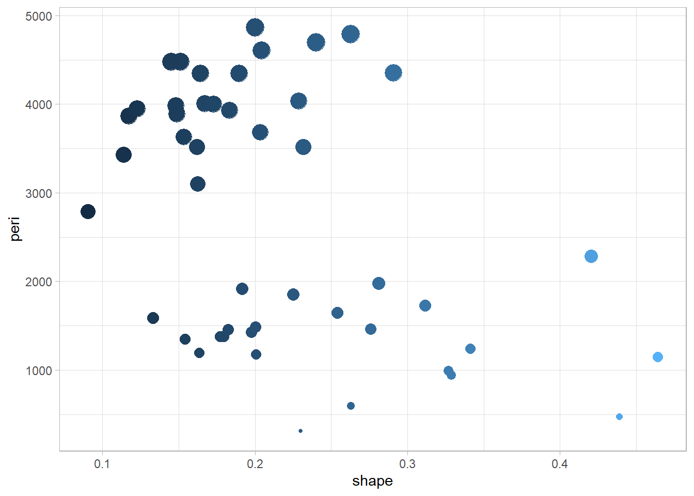

kableExtra::kable(head(rock))| area | peri | shape | perm |
|---|---|---|---|
| 4990 | 2791.90 | 0.0903296 | 6.3 |
| 7002 | 3892.60 | 0.1486220 | 6.3 |
| 7558 | 3930.66 | 0.1833120 | 6.3 |
| 7352 | 3869.32 | 0.1170630 | 6.3 |
| 7943 | 3948.54 | 0.1224170 | 17.1 |
| 7979 | 4010.15 | 0.1670450 | 17.1 |
Descrizione del mio dataset
kableExtra::kable(head(rock))| area | peri | shape | perm |
|---|---|---|---|
| 4990 | 2791.90 | 0.0903296 | 6.3 |
| 7002 | 3892.60 | 0.1486220 | 6.3 |
| 7558 | 3930.66 | 0.1833120 | 6.3 |
| 7352 | 3869.32 | 0.1170630 | 6.3 |
| 7943 | 3948.54 | 0.1224170 | 17.1 |
| 7979 | 4010.15 | 0.1670450 | 17.1 |
library(ggplot2)
ggplot(rock,
aes(y=peri,x=shape, color =shape, size = peri)) + geom_point() +
theme_light() + theme(legend.position = "none") 
Prima colonna più stretta della seconda dove parlo del mio grafico
ggplot(rock,
aes(y=peri,x=shape, color =shape, size = peri)) + geom_point() +
theme_light() + theme(legend.position = "none") 
Quarto enables you to weave together content and executable code into a finished document. To learn more about Quarto see https://quarto.org.
When you click the Render button a document will be generated that includes both content and the output of embedded code. You can embed code like this:
1 + 1!!! [1] 2You can add options to executable code like this
[1] 4The echo: false option disables the printing of code (only output is displayed).
 {#fig-psicostat, width=“20%”, fig-align=“center”}
{#fig-psicostat, width=“20%”, fig-align=“center”}
Le mie immagini